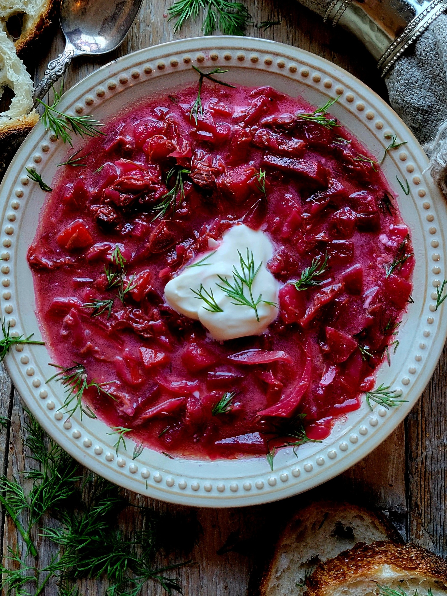

Home

Borscht with Short Rib Stock Photo By The Lemon Apron
What is Borscht?
Borscht is a traditional slavic dish originating from
Ukraine, and it is famous for it's vibrant red color.
This red color comes from beetroots, and can actually be eaten cold and hot.
The word borscht has a 't' at the end of it but you just call it borsch. This recipe, however,
is packed with vitamins so stay tuned for the ingredients.
Now when it comes to soup it's hard to mess it up. Cut your veggies all bite-sized and don't worry about
measurements too much. Meat is optional but it does make a difference in flavor. Sour cream is optional too
but it is traditionally added with a serving.
Ingredients for Borscht
Beets
Onions
Carrots
Potatoes
Cabbage
Garlic
Beef Shank or Chuck (optional)
Sour Cream (optional)
Steps
**Disclaimer this is a simplified version**
First add some bone in beef of choice into a pot, cut into pieces, and bring it to a boil for 1 hour.
While the beef is boiling, cut up your vegetables.
How you chop your veggies is up to you, but usually bite size pieces are good.
Strain the beef broth from the meat into another pot, and cut the meat into pieces. If there's bone in it, cut it from the rest.
Add pieces of meat back into broth, along with 1.5 Liters of water.
Add beats and potatoes you chopped up into the water.
Set it to simmer aside.
Fry the onions, garlic, and carrots in a pan for 5 minutes and caramelize them nicely.
Then add the sautéed vegetables it into the pot.
Cut up some cabbage and then toss it in the pot too.
You should know when the soup is done because the veggies will be able to get forked easily when they're tender.
Serve with some sour cream on top and enjoy your borscht!